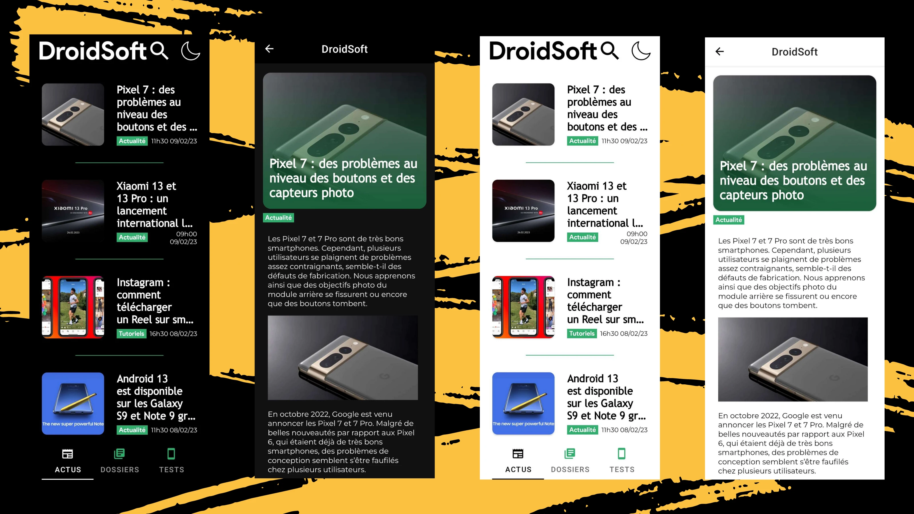
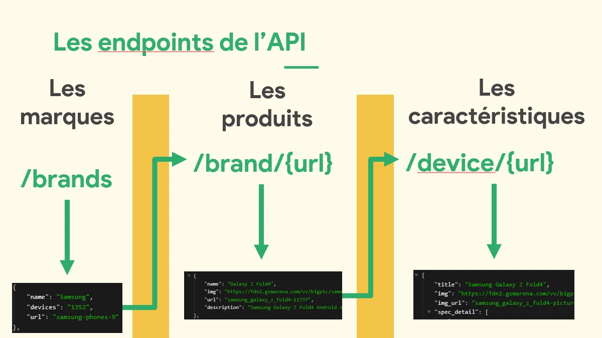

Application Mobile - DroidSoft App
A l'occasion du projet tutoré de 2e année, j'ai entrepris le développement d'une application mobile pour DroidSoft. DroidSoft est un média en ligne (sous WordPress), spécialisé dans les technologies autour du monde d'Android. Ce sont notamment les smartphones, les tablettes, les écouteurs, les montres connectées … Ainsi, dédié à ces technologies, il était pertinent d'investir un support mobile intégré, et pas simplement la version mobile du site. C'est donc ça la genèse du projet, mais comment l'avons-nous fait ? ⤵️
Caractéristiques techniques du projet
Langages / technologies utilisés
Ce projet étant assez important, plusieurs aspects sont travaillés. Il y a d'abord l'application en elle-même, qui utilise deux technologies :
- Android Studio
- Kotlin
Le choix de Kotlin se justifie par une demande plus importante, et une modernité contrairement à Java.
D'autre part, nous avons une partie avec création d'API, pour récupérer et créer une base de données de smartphones. Cette API se base sur ces technologies :
- Javascript (scrapping avec Cheerio)
- Express.js (Récupération des données scrappées par l'API, pour l'enregistrement dans la BDD)
- MySQL pour la gestion de la BDD
Pour expliquer brièvement le cheminement des données, elles sont scrappées et une création de route se fait selon les données scrappées. On récupère ensuite les données scrappées pour les remplir en base de données, et une autre API ouvre des endpoints pour récupérer les données enregistrées dans la base de données.
Combien de temps, qui et quoi ?
Ce projet est le projet tutoré réalisé en 2e année, il s'est donc étalé de novembre 2022 jusqu'à fin mars 2023. En temps total alloué, on se place sur 150h environ par personne.
Pour ce projet, nous étions 4 à le réaliser : Lucas Chalmandrier, Eliot Bianchin, Quentin Detré et moi-même.
Etant à l'origine partagée avec les responsables de DroidSoft de ce projet, j'étais en charge des relations avec le média. Pour bien entreprendre le projet, cela me tenait à cœur de m'occuper de la gestion de l'équipe du projet, ce que j'ai donc fais. Et en partie technique, je me suis concentré sur le développement de l'application dans un premier temps, puis je suis parti sur la création de l'API pour la base de données.
Détails du projet
Ce projet se concentre donc autour de 4 piliers majeurs. Il y a d'une part toute une recherche sur le design, pour intégrer au mieux les notions d'UI et d'UX pour rendre l'application ergonome. Aussi, il était important de maîtriser la communication avec des APIs, en particulier celle de WordPress, qui nous permet la récupération des articles, des commentaires … Le développement de l'application est aussi au centre du projet, avec des technologies nouvelles (Android Studio et Kotlin) au début du projet. C'était un pari plus risqué, mais réussi. Et enfin, la création de l'API et de la base de données est le 4e pilier de ce projet.
Design / UI & UX
Je n'ai pas crée directement le design, pour cette partie là, j'étais en charge de faire des retours aux clients sur ce qui était fait, pour adapter en conséquence le design. Connaissant l'ambition du projet, j'ai par ailleurs aidé la personne en charge, afin qu'elle sache quoi faire, et lui donner les éléments de la charte graphique du site.
La petite touche Green IT & Numérique Responsable
Pour axer notre projet autour de la sensibilisation au Green IT que l'on a en cours, nous avons placé le design au centre de cette réflexion Numérique Responsable.
Un peu de contexte d'abord. Sur le marché des smartphones, une technologie d'écran domine le marché, à savoir l'OLED. Cette technologie d'affiche fait en sorte que chaque pixel de l'écran s'allume ou s'éteigne individuellement. Ainsi, dans le cas de l'affichage d'un pixel noir, le pixel associé s'éteindra.
C'est pourquoi, nous avons opté pour 2 designs, un "Light Mode" et un "Dark Mode". Le Dark Mode peut utiliser des teintes de couleurs sombres, ou simplement un fond noir. Et si le design est justement réellement noir, et non pas une teinte colorée, cela permet d'éteindre les pixels affichés, augmente le contraste d'ailleurs. Le profit est donc à la fois environnemental, mais concerne aussi l'accessibilité.

Communication avec l'API WordPress
Au sein de l'application, il a fallu intégrer la communication avec l'API de WordPress, qui est très exhaustive et complète. C'était l'avantage, nous avions une base solide pour interagir avec les données du site.
Développement de l'application
Comme précisé plus haut, on est parti sur un développement en Kotlin, sous Android Studio. Dans ce développement, 2 choses étaient à réaliser, la partie fonctionnelle, et la partie graphique de l'application. Sur l'ensemble de l'application, je me suis placé sur les 2 aspects de celle-ci.
L'intérêt de ce projet était d'expérimenter un aspect de la formation que nous n'avions pas vu, le développement d'applications. Par ailleurs, en se plaçant sur des technologies plus récentes et plus demandées, cela permet d'avoir un rendu presque professionnel.
Nous avons aussi profité de ce projet pour travailler en mode "entreprise". Cela passe par l'utilisation de Git (GitHub) pour le partage de code, avec une rigueur dans son usage. Le partage de tâche s'est fait selon une "spécialité", design, app ou création de l'API / BDD.
Création d'API et BDD
Comme précisé plus haut aussi, la création de cette API se fait en javascript pour le scraping, mais aussi pour l'interaction avec la base de données. Celle-ci est d'ailleurs gérée en MySQL, avec une conception réfléchie pour améliorer la rapidité. Le scraping récupère des données sous un format initial, se basant sur un triplet de chemins d'accès.
On a le /brands qui nous donne les marques, le /brand/{url} qui nous donne tous les produits d'une marque, et le /device/{url} qui nous donne les détails techniques de ce téléphone. Un premier script était en charge de récupérer ces données, et de les stocker dans une base de données. Ensuite, tous les jours, un second script doit comparer pour trouver les nouvelles données, et les enregistrer.
En résumé
Ce projet a donc été une bonne porte ouverte sur le travail sous forme de projet. Nous avons à la fois travaillé en groupe, à travers des outils professionnels (Git, Trello ...), mais aussi selon un cahier des charges, et des tâches définies. Chacun travaillant sur un pannel de tâches défini, c'est plus favorable à une amélioration de ses capacités dans ce domaine. Enfin, sur des projets en entreprise, il est tout à fait possible de ne pas connaître les technologies utilisées, c'est pourquoi, nous sommes partis dans l'inconnu, avec Android Studio et Kotlin, que nous n'avions jamais travaillé ou vu auparavant.
Auto-critique du résultat
Pour parler un peu plus du résultat du projet, il est nécessaire d'inclure les retours que l'on a eu de la part de DroidSoft, qui commanditait le projet. Si nous reprenons les éléments dans l'ordre, nous avons commencé à partir du design. Celui-ci a donc été réalisé au jour le jour, avec des retours au jour le jour également. L'objectif était clair, ne pas aller droit dans le mur, et se baser sur les envies et les appréciations de l'équipe de DroidSoft. Cette partie communication était aisée, simplement des messages sur Slack avec les éléments de design produits, en demandant de valider ou non.
Pour la partie développement de l'application, bien que nous partions sur une base solide, sur laquelle, nous devions ajouter plein d'éléments, tout en se formant, ça a manqué de rapidité. Nous aurions pu réaliser plus de fonctionnalité, avec des deadlines plus courtes. Mais dans l'ensemble, à la date première date butoir, nous avions une application fonctionnelle, et qui répondait aux critères minimaux d'une application de ce type (média player pour Android).
Enfin, la partie création de l'API des smartphones (avec Base de Données), étant donné que cela s'étalait aussi sur mon projet de stage, j'ai repris en main cette partie là sur le 3e sprint. Etant donné qu'il y avait beaucoup d'intermédiaires (le site que l'on scrappe, une API tampon …) cela impliquait des contre-temps. Mais dans l'ensemble, le résultat est bon. Comme je viens de le dire, c'est lié à mon stage, donc j'en reparlerai dans le projet "Stage" qui arrivera à la fin de celui-ci sur ce site !